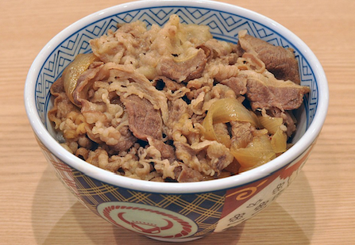

Gyudon

Easy meat and egg dish!
Ingredients
- Rice
- Thinly sliced beef shank
- Egg
- Sliced onion
- Soy sauce
- Mirin
- Sugar
Steps
- In a hot pan, add onion and bit of oil.
- When onions are cooked, add in beef.
- Add in 1:1:1 ratio of sugar, soy sauce, mirin
- Add beaten egg, then cover pan until beef and egg cooked.